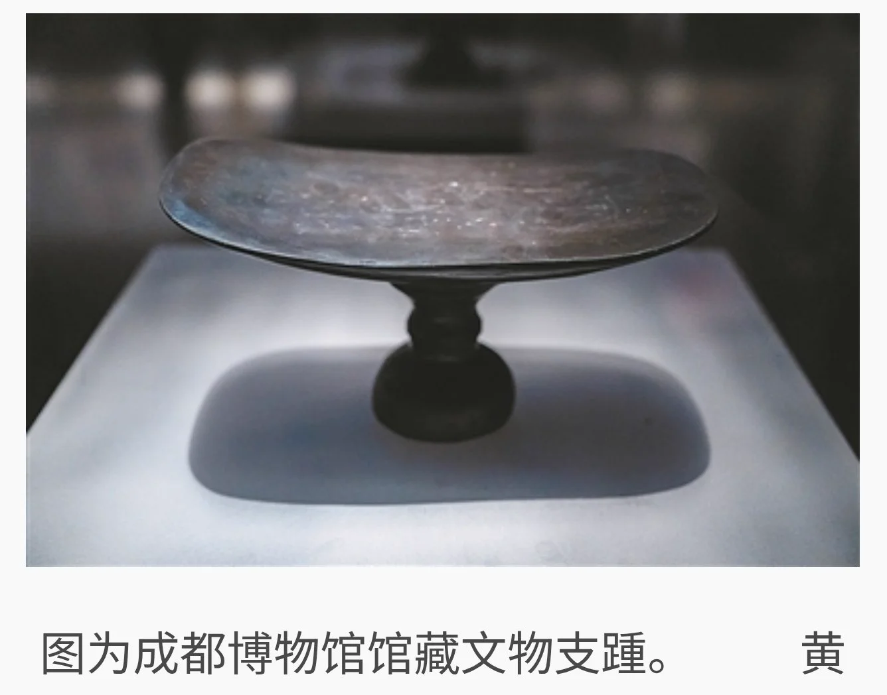
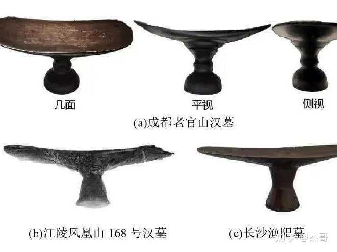
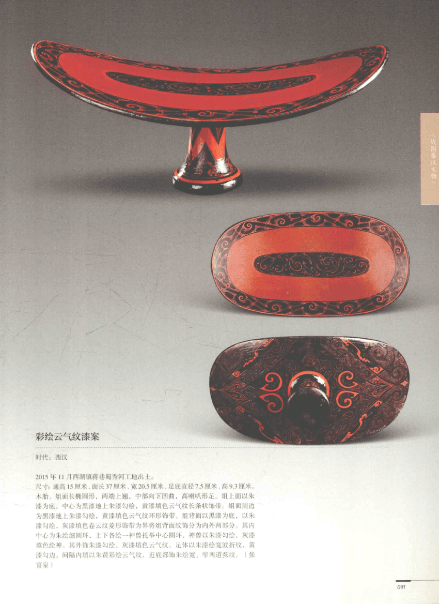
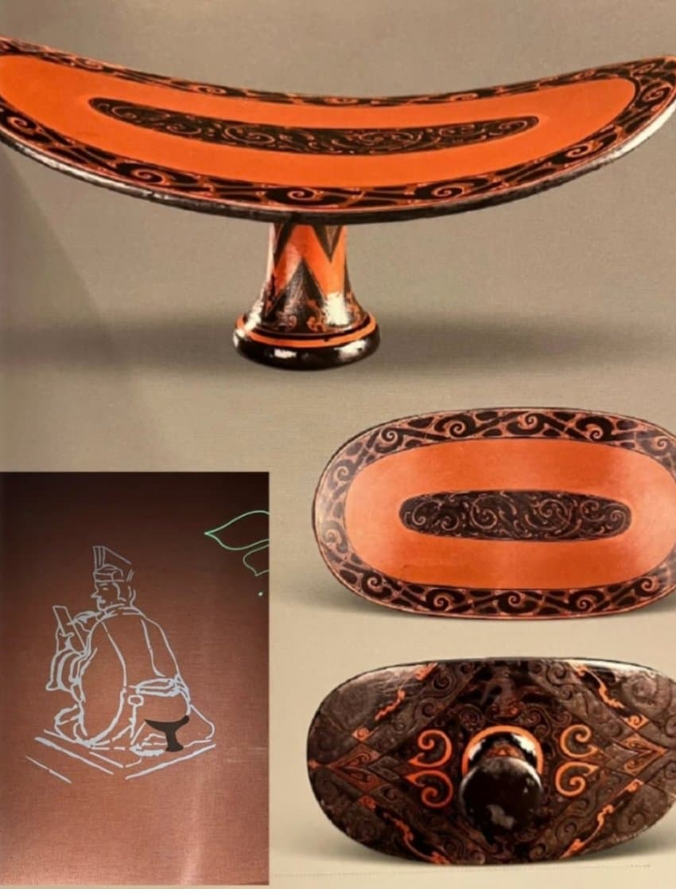
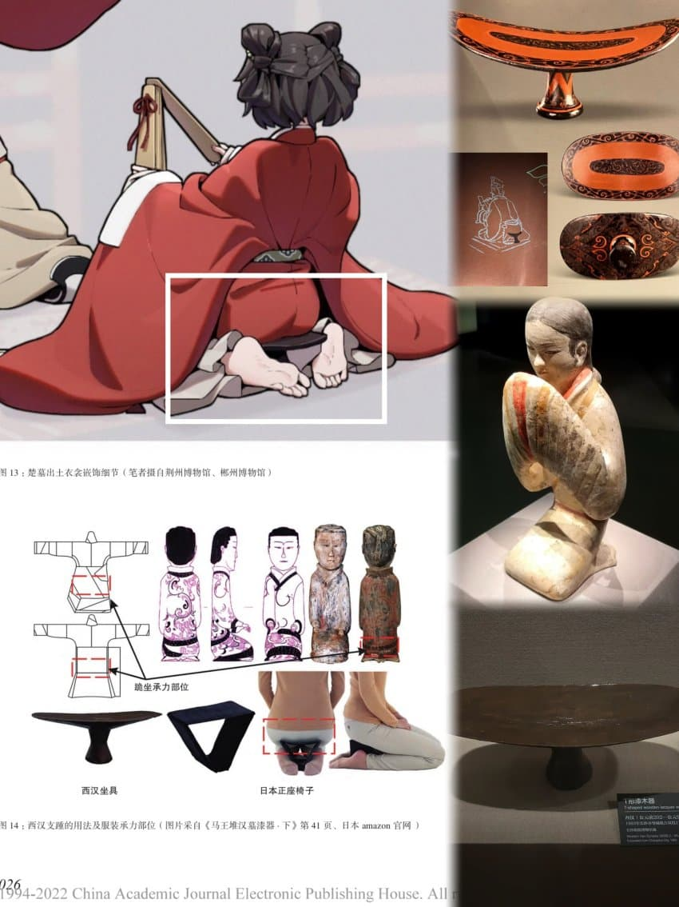
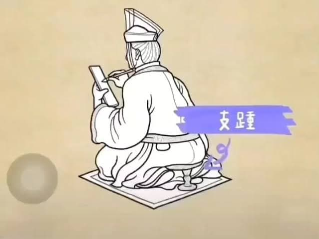
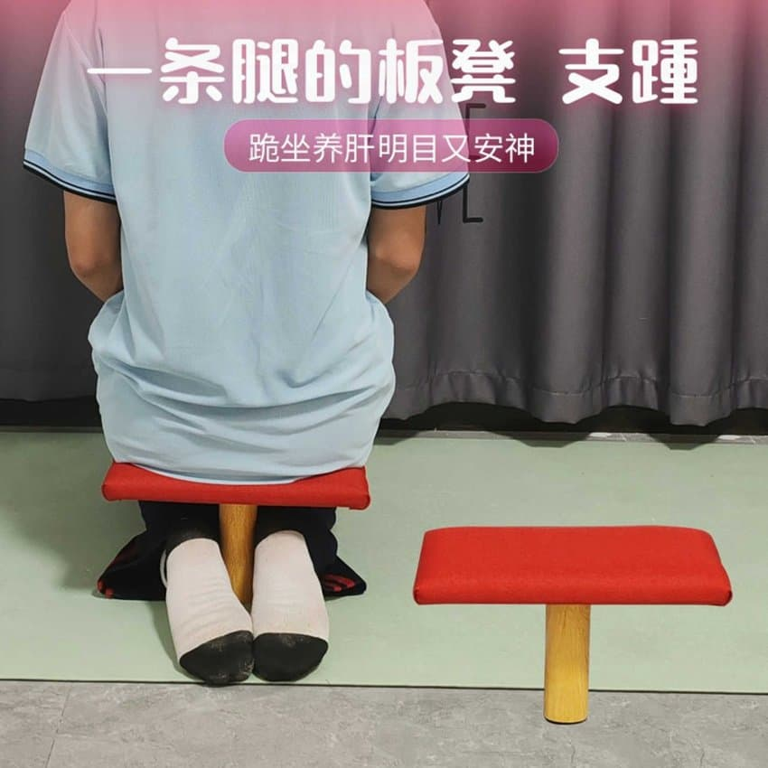

1970년대부터 중국에서 출토된 한나라 시대 유물로, 당시에는 정확히 어디에 사용됐는지 불명이었다고함
당시에는 걍 T자형 유물로 불렀다나


이후 고문헌 대조 작업을 통해 이 도구의 이름이 지종(支蹱)임이 밝혀졌음.
지탱할 지(支)와 발뒤꿈치를 뜻하는 종(蹱)이 합쳐진 말로
무릎을 꿇고 앉을 때 기둥 부분을 두 종아리 사이에 끼우고, 위쪽 판을 엉덩이와 허벅지 아래에 받쳐 앉는 방식이라고함.


일케하면 좀 더 편하게 무릎 끓으면서도
단정한 모습을 연출할 수 있다고함
의자에 앉는게 100배는 더 편하다는걸 깨닫게된 중국인들이 위진남북조 시대 이후 갖다버려서 사라졌음
댓글
수집 당시 댓글 206개
ㅇㅇ · 11.14 14:09:38
겐쉰프 · 11.14 14:10:14
방사거북 · 11.14 14:10:33
DC전사쿠루미쨩 · 11.14 14:15:40
ㅇㅇ · 11.14 14:18:11
· ㅇㅇ · 11.14 18:11:49
ㅇㅇ · 11.14 14:18:22
ㅇㅇ · 11.14 14:18:44
· ㅇㅇ · 11.14 14:41:33
· ㅇㅇ · 11.14 18:01:11
ㅇㅇ · 11.14 14:18:56
· oo · 11.14 14:24:40
· ㅇㅇㅇ · 11.14 16:30:50
· ㅇㅇ · 11.14 17:20:11
· 링타로 · 11.14 17:55:31
ㅇㅇ · 11.14 14:19:57
ㅇㅇ · 11.14 14:20:36
· ㅇㅇ · 11.14 17:49:58
좃구녕 · 11.14 14:21:51
ㅇㅇ · 11.14 14:21:58
ㅇㅇ · 11.14 14:22:27
· ㅇㅇ · 11.14 18:01:35
ㅇㅇ · 11.14 14:23:08
· ㅇㅇ · 11.14 14:42:45
· ㅇㅇ · 11.14 18:39:54
부드러운곰탱이 · 11.14 14:24:09
· ㅇㅇ · 11.14 14:28:10
· ㅇㅇ · 11.14 14:37:40
· ㅇㅇ · 11.14 14:56:03
테갤러 · 11.14 14:24:21
2456778 · 11.14 14:29:30
· ㅇㅇ · 11.14 18:01:42
ㅇㅇ · 11.14 14:30:46
ㅇㅇ · 11.14 14:32:40
ㅇㅇ · 11.14 14:33:25
어린이사랑 · 11.14 14:35:28
· ㅇㅇ · 11.14 18:01:50
· 2456778 · 11.14 18:04:53
ㅇㅇ · 11.14 14:39:25
o o · 11.14 14:41:34
ㅇㅇ · 11.14 14:42:00
つついあやめのおっと · 11.14 14:42:25
· ㅇㅇ · 11.14 14:43:14
· つついあやめのおっと · 11.14 14:45:17
· ㅇㅇ · 11.14 14:52:55
LoLHistory · 11.14 14:47:13
· ㅇㅇ · 11.14 16:30:53
· LoLHistory · 11.14 16:46:54
· ㅇㅇ · 11.14 17:07:18
· LoLHistory · 11.14 17:08:44
· ㅇㅇ · 11.14 17:24:27
· ㅇㅇ · 11.14 17:25:27
· ㅇㅇ · 11.14 17:32:16
ㅇㅇ · 11.14 15:01:02
· ㅇㅇ · 11.14 18:02:19
ㅇㅇ · 11.14 15:05:58
ㅇㅇ · 11.14 15:10:10
· ㅇㅇ · 11.14 15:18:01
ㅇㅇ · 11.14 15:13:10
ㄹㄹㄹㄹ · 11.14 15:21:24
· ㅇㅇ · 11.14 15:33:30
xopowo · 11.14 15:21:54
. · 11.14 15:23:01
ㅇㅇ · 11.14 15:36:00
ㅇㅇ · 11.14 15:37:36
ㅇㅇ · 11.14 15:37:49
ㅇㅇ · 11.14 15:48:07
· ㅇㅇ · 11.14 18:12:25
ㅇㅇ · 11.14 15:53:06
ㅇㅇ · 11.14 15:58:32
해갤러 · 11.14 16:11:14
ㅇㅇ · 11.14 16:13:07
ㅇㅇ · 11.14 16:13:46
맛간람쥐 · 11.14 16:15:39
· ㅇㅇ · 11.14 16:25:59
ㅇㅇ · 11.14 16:26:22
ㅇㅇ · 11.14 16:28:41
ㅇㅇ · 11.14 16:35:54
192.168.* · 11.14 16:36:11
ㅇㅇ · 11.14 16:41:57
미개한
조선인
Zintp_찐팁 · 11.14 16:42:21
ㅇㅇ · 11.14 16:42:34
털빵빵이 · 11.14 16:43:54
· ㅇㅇ · 11.14 17:23:48
ㅇㅇㅇㅇ · 11.14 16:46:47
vvkmjw · 11.14 16:51:30
ㅇㅅㅇ · 11.14 16:52:42
ㅇㅇ · 11.14 17:01:51
· ㅇㅇ · 11.14 17:47:16
ㅇㅇ · 11.14 17:11:16
ㅇㅇ · 11.14 17:17:31
· 소설쟁이 · 11.14 17:45:34
ㅇㅇ · 11.14 17:25:28
ㅇㅇ · 11.14 17:33:32
ㅇㅇ · 11.14 17:40:56
ㅇㅇ · 11.14 17:46:37
링타로 · 11.14 17:54:00
ㅇㅇ · 11.14 18:03:59
ㅇㅇ · 11.14 18:20:58
ㅇㅇ · 11.14 18:29:32
· ㅇㅇ · 11.14 12:12:59
· 스틸콜드 · 11.14 12:17:22
· ㅇㅇ · 11.14 13:52:35
· 파치카 · 11.14 13:57:07
· ㅇㅇ · 11.14 14:02:12
· ㅇㅇ · 11.14 14:09:15
· 방사거북 · 11.14 14:10:05
· ㅇㅇ · 11.14 14:14:43
· ㅇㅇ · 11.14 14:16:44
· ㅇㅇ · 11.14 14:18:40
· omedetou · 11.14 14:20:29
ㅇㅇ · 11.14 12:02:31
· ㅇㅇ · 11.14 13:45:14
· ㅇㅇ · 11.14 14:00:10
· 빨간약 · 11.14 14:33:24
· つついあやめのおっと · 11.14 14:39:50
ㅇㅇ · 11.14 12:02:31
ㅇㅇ · 11.14 12:02:45
ㅇㅇ · 11.14 12:03:17
싸가지미포함 · 11.14 12:04:38
ㅇㅇ · 11.14 12:05:08
ㅇㅇ · 11.14 12:06:33
· ㅇㅇ · 11.14 12:08:28
· 모순 · 11.14 12:11:29
· 수류탄이야 · 11.14 12:13:37
· 스틸콜드 · 11.14 12:14:03
· ㅇㅇ · 11.14 12:54:55
· AVTOKRATOR · 11.14 13:53:59
· ㅇㅇ · 11.14 14:00:52
· AVTOKRATOR · 11.14 14:01:43
· 냉동 · 11.14 14:11:49
· ㅇㅇ · 11.14 14:35:57
Bluearchive · 11.14 12:09:37
· 식물빌런 · 11.14 14:08:57
· Bluearchive · 11.14 17:11:45
ㅇㅇ · 11.14 12:12:42
ㅇㅇ · 11.14 12:59:57
· ㅇㅇ · 11.14 13:02:35
· ㅇㅇ · 11.14 14:07:54
ㅇㅇ · 11.14 13:07:21
갓녕로봇 · 11.14 13:30:24
ㅇㅇ · 11.14 13:47:16
3dd · 11.14 13:51:38
· ㅇㅇ · 11.14 13:54:24
ㅇㅇ · 11.14 13:53:00
ㅇㅇ · 11.14 13:53:34
슈밤베르크 · 11.14 13:54:01
· ㅇㅇ · 11.14 14:57:37
ㅇㅇ · 11.14 13:54:19
ㅇㅇ · 11.14 13:54:44
ㅇㅇ · 11.14 13:55:01
ㅇㅇ · 11.14 13:55:36
ㅇㅇ · 11.14 13:55:46
ㅇㅇ · 11.14 13:55:53
ㅇㅇ · 11.14 13:56:20
ㅇㅇ · 11.14 13:57:23
· ㅇㅇ · 11.14 13:58:38
삭제됨 · 11.14 13:57:29
· ㅇㅇ · 11.14 14:13:10
ㅇㅇ · 11.14 13:57:49
☝️
ㅇㅇ · 11.14 13:58:17
ㅇㅇ · 11.14 13:58:21
· ㅇㅇ · 11.14 14:00:04
· ㅇㅇ · 11.14 14:00:27
· 욕받이 · 11.14 14:08:01
· 겐쉰프 · 11.14 14:11:06
· ㅇㅇ · 11.14 14:32:16
· ㅇㅇ · 11.14 17:15:03
ㅇㅇ · 11.14 13:58:43
· ㅇㅇ · 11.14 14:00:33
· ㅇㅇ · 11.14 14:17:30
· ㅇㅇ · 11.14 14:24:39
· ㅇㅇ · 11.14 14:26:01
· ㅇㅇ · 11.14 14:40:10
· ㅇㅇ · 11.14 14:40:36
· ㅇㅇ · 11.14 14:41:06
· ㅇㅇ · 11.14 14:41:21
· ㅇㅇ · 11.14 14:41:33
· ㅇㅇ · 11.14 14:42:21
· ㅇㅇ · 11.14 14:43:08
· ㅇㅇ · 11.14 14:44:43
· ㅇㅇ · 11.14 14:46:38
· ㅇㅇ · 11.14 14:47:12
· ㅇㅇ · 11.14 14:47:33
· ㅇㅇ · 11.14 14:49:46
· ㅇㅇ · 11.14 14:51:19
· ㅇㅇ · 11.14 14:51:41
· ㅇㅇ · 11.14 14:52:56
· ㅇㅇ · 11.14 14:53:40
· ㅇㅇ · 11.14 15:59:30
ㅇㅇ · 11.14 14:00:02
· ㅇㅇㅇ · 11.14 14:05:22
· ㅇㅇ · 11.14 17:46:51
ㅇㅇ · 11.14 14:03:12
삭제됨 · 11.14 14:03:41
· ㅇㅇ · 11.14 14:08:47
ㅇㅇ · 11.14 14:05:07
ㅇㅇ · 11.14 14:05:12
ㅇㅇ · 11.14 14:06:14
kawa · 11.14 14:09:24
ㅇㅇ · 11.14 12:02:10
· ㅇㅇ · 11.14 12:02:37
· 수류탄이야 · 11.14 12:02:47
· ㅇㅇ · 11.14 12:03:30
· ㅇㅇ · 11.14 12:06:16
· ㅇㅇ · 11.14 12:11:38